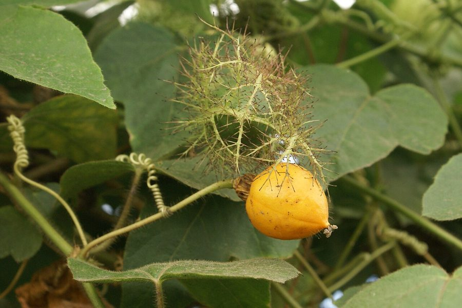

जंगली पैशनफ्रूटWild Passion Fruit
Passiflora foetida · Passifloraceae · FLR-0081

- Scientific name
- Passiflora foetida L.
- Family
- Passifloraceae
- Hindi
- जंगली पैशनफ्रूट
- Status here
- invasive
- IUCN
- not evaluated
When to look कब देखें
Expected mainly in July, August, September, October, November, December.
जंगली पैशनफ्रूट / Wild Passion Fruit
Passiflora foetida L. — Passifloraceae
जंगली पैशनफ्रूट (दुर्गंधयुक्त कृष्णकमल / सेंटेड पैशनफ्लॉवर) — पूर्वी उत्तर प्रदेश के खेतों की सीमाओं, रास्तों के किनारे की झाड़ियों और जंगलों के बाहरी हिस्सों में पाई जाने वाली एक अत्यंत आकर्षक, लतदार परजीवी-जैसी बेल (climbing vine with tendrils) है। यह मूल रूप से उष्णकटिबंधीय अमेरिका का निवासी है, जो भारत में एक सजावटी और अब आक्रामक (invasive) खरपतवार के रूप में फैल चुका है। इसकी सबसे बड़ी पहचान इसके भूमितीय रूप से जटिल और सुंदर फूल (geometrically beautiful flowers) हैं, जिनके नीचे बैंगनी-सफ़ेद धागों का चक्र (corona) बना होता है। इसके छोटे गोल फल हरे-पीले रंग के होते हैं, जो एक चिपचिपे, बालों वाले जाल (hairy-husked bract cage) के अंदर सुरक्षित रहते हैं। महत्वपूर्ण विषैली चेतावनी: इसके पके हुए फल खाने योग्य और मीठे होते हैं, लेकिन इसके कच्चे हरे फल और पत्तियाँ अत्यधिक विषैले होते हैं क्योंकि इनमें साइनाइड बनाने वाले यौगिक (cyanogenic compounds) पाए जाते हैं। पारिस्थितिक रूप से, यह बेल तितली तवनी कोस्टर (Tawny Coster, INS-0022) की पसंदीदा कैटरपिलर मेज़बान (primary larval host plant) है।
Quick Identification त्वरित पहचान
| Feature | Description |
|---|---|
| Plant habit | Climbing herbaceous vine, climbing up to 2–5 meters using thin, spring-like axillary tendrils |
| Leaves | Alternately arranged, 3-lobed, covered in sticky glandular hairs that release a bad smell when crushed |
| Flowers | Geometrically complex (3–5 cm wide), white or pale lilac, with a dense central ring of purple-white filaments (corona) |
| Fruit | A round, globose berry (1.5–2.5 cm), turning bright yellow-orange when ripe, enclosed in a sticky lace-like hairy cage |
| Toxicity | TOXIC UNRIPE FRUIT: Unripe green fruits and raw leaves contain cyanogenic glycosides. Do NOT eat. |
Field tip: Look in wild hedges along village borders. Search for climbing vines with hairy, 3-lobed leaves that smell slightly musty or foetid when touched. Look for beautiful white flowers with a purple central crown. Look for small yellow balls enclosed inside a sticky, hair-like cage of green lace.
Morphology आकारिकी
Biometrics (typical measurements of mature plants in the northern Indian plains):
| Measurement | Range |
|---|---|
| Vine length | 2.0–5.0 m |
| Leaf length | 5.0–10.0 cm |
| Flower diameter | 3.0–5.0 cm |
| Fruit diameter | 1.5–2.5 cm |
| Seed count per fruit | 15–30 seeds |
| Weight of 100 seeds | 0.8–1.2 g |
Stem and Tendrils: Stems are thin, round, covered in long, spreading yellow hairs and sticky glands. The tendrils are simple, spiral-shaped, emerging opposite to the leaves.
Foliage: Simple, alternate, shallowly 3-lobed leaves. The leaf margins are covered with sticky, bad-smelling glandular hairs.
Flowers: Intricate. The calyx has 5 sepals, and the corolla has 5 white petals. Above the petals is a double ring of purple and white hair-like filaments (the corona). In the center, a column (androgynophore) raises the 5 yellow stamens and 3 green styles.
Fruit: A thin-walled, globose berry. The sticky, lace-like bracts surrounding the fruit act as a trap for small insects, protecting the fruit.
Associated Species / Interactions संबंधित प्रजातियाँ
- Larval Host: Serving as the primary larval host plant for the caterpillars of the Tawny Coster butterfly (Acraea terpsicore, INS-0022). The caterpillars feed on the leaves, absorbing the cyanogenic compounds to make themselves toxic and unpalatable to insectivorous birds.
- Protocarnivorous adaptation: The sticky glandular hairs on the fruit cage trap small crawling insects. While the plant does not digest them directly, it prevents them from climbing up to damage the flower or fruit.
Pests and Diseases कीट और रोग
- Tawny Coster Caterpillar Defoliation: In late monsoon, heavy groups of Tawny Coster caterpillars can completely strip all leaves from the vine.
- Spider Mites: Sucking pests that spin tiny webs on the leaf undersides, causing yellow dry patches.
- Powdery Mildew: Fungal white spots on leaves in damp shaded sites.
Traditional and Ethnobotanical Use पारंपरिक और नृवंश文पति उपयोग
- Medicinal Skin Paste: The fresh leaves are crushed to extract juice, which is applied traditionally in folk medicine over minor skin cuts, burns, and scabies.
- Wild Foraged Ripe Fruit: Children and rural herders collect the bright yellow-orange ripe fruits, peeling back the dry hairy cage to eat the sweet, pulp-covered seeds.
- Traditional Hysteria Decoction: In some traditional systems, a dilute decoction of the dried leaves and stems is consumed in minute quantities to treat sleep disorders, anxiety, and hysteria.
- Natural Border Binder: The fast-growing vine scrambles over bamboo farm fencing, binding the dry poles together and forming a dense green screen.
Expected Locally स्थानीय रूप से अपेक्षित
Not a field record. Written from published accounts for eastern Uttar Pradesh. No confirmed local sighting yet — if you have seen it, that is what the atlas needs.
अभी तक स्थानीय पुष्टि नहीं। यह विवरण प्रकाशित स्रोतों से है, किसी अवलोकन से नहीं।
A common invasive climber along the roadsides and field fences of the Basti district, regularly observed in the Harraiya, Vikramjot, and Basti blocks. Residents state that the plant grows fast after the first monsoon rains, and children love searching the hedges for the bright yellow "lanterns" to eat the sweet pulp inside. Caterpillars of the Tawny Coster butterfly are frequently seen hanging under the leaves in September.
Distribution वितरण
Global range: Native to the tropical regions of the Americas (Caribbean, Central and South America); now naturalized and highly invasive across tropical Asia, Africa, and Australia.
In India: Widespread in all warm states and Gangetic plains.
In Uttar Pradesh: Common state-wide in all rural and agricultural zones.
In Basti district / eastern UP: Widespread across all agricultural blocks.
Research Questions शोध प्रश्न
Anyone can investigate these | कोई भी इन प्रश्नों की जाँच कर सकता है
- How many Tawny Coster caterpillars can be found feeding on a single 3-meter Wild Passion Fruit vine in September? — Record caterpillar counts.
- Do small ants get trapped and die on the sticky hairy cage surrounding the fruit of this vine in Basti? — Inspect and count trapped insects.
- What is the ratio of seeds that germinate when planted with the sweet fruit pulp versus washed clean? — Conduct germination trials.
- How many hours does a single Wild Passion flower remain open before its petals close in the evening? — Track flower phenology.
- Does the population count of Tawny Coster butterflies increase in villages with high density of Wild Passion Fruit vines? / क्या उन गाँवों में तवनी कोस्टर तितलियों की संख्या बढ़ जाती है जहाँ जंगली पैशनफ्रूट की बेलों की सघनता अधिक होती है? — Compare butterfly and host plant counts across different villages.
Similar Species मिलती-जुलती प्रजातियाँ
| Species | How to tell apart | comparison |
|---|---|---|
| Cultivated Passion Fruit (Passiflora edulis) | Much larger woody vine; leaves are smooth, large; flower is larger (6–8 cm); fruit is large, hard-shelled purple/yellow, lacks the hairy cage | पैशनफ्रूट (बड़ा) — चिकने पत्ते, बड़ा फल, बालों वाले कवर का अभाव |
| Blue Morning Glory (Ipomoea nil) | Stems lack tendrils; leaves are 3-lobed, hairy but not sticky/bad-smelling; flowers are blue-purple trumpets | नीली घुइयाँ — कीप जैसे नीले फूल, कुंडलित तंतुओं का अभाव |
| Transverse Ladybird (Coccinella transversalis) | Animal (insect); dome-shaped orange beetle with black wavy lines; eats aphids on plants | लेडीबर्ड बीटल — गोल नारंगी कीट, शाकाहारी बेल नहीं |
Field rule: Climbing vine with tendrils, hairy 3-lobed leaves smelling bad when crushed, white-purple geometrically complex crown flowers, and yellow-orange round fruits enclosed in a sticky hairy cage of green lace, is the Wild Passion Fruit.
Taxonomy & Classification वर्गीकरण
Original description. Carl Linnaeus described the Wild Passion Fruit as Passiflora foetida in 1753 in his Species Plantarum (Vol. 2, p. 959). The type locality was listed as Dominica (Caribbean). The genus name Passiflora is derived from the Latin passio (passion) and flos (flower), referencing the flower parts representing symbols of Christ's passion. The specific name foetida is Latin for stinking, referencing the musty smell of the crushed leaves.
Subspecies. Monotypic — no subspecies are currently recognised in the main index, though many botanical varieties exist globally.
Family and order placement. Placed in the order Malpighiales, family Passifloraceae (passion flower family), subfamily Passifloroideae, tribe Passifloreae.
Phylogenetic notes. Passiflora foetida belongs to a specialized group of passifloras that evolved sticky, glandular bracts to trap insect pests, representing a protocarnivorous defense mechanism that reduces herbivore damage to developing seeds.
IUCN status rationale. Not evaluated (NE) by the IUCN Red List. It has a highly secure, globally expanding invasive population.
Photo Gallery फोटो गैलरी
References संदर्भ
- Linnaeus, C. (1753). Species Plantarum. Laurentii Salvii, Holmiae, Vol. 2, p. 959. [original description]
- Brandis, D. (1906). Indian Trees (includes woody Passiflora relatives). Archibald Constable & Co., London.
- Kirtikar, K. R. & Basu, B. D. (1935). Indian Medicinal Plants. Vol. II. Lalit Mohan Basu, Allahabad.
- Killip, E. P. (1938). The American Species of Passifloraceae. Field Museum of Natural History (includes detailed anatomical data on foetida varieties).
- World Flora Online (2024). Passiflora foetida taxon details.
- GBIF Occurrence Data — Passiflora foetida, India (2010–2025).
Source file: species/flora/climbers/wild_passion_fruit.md